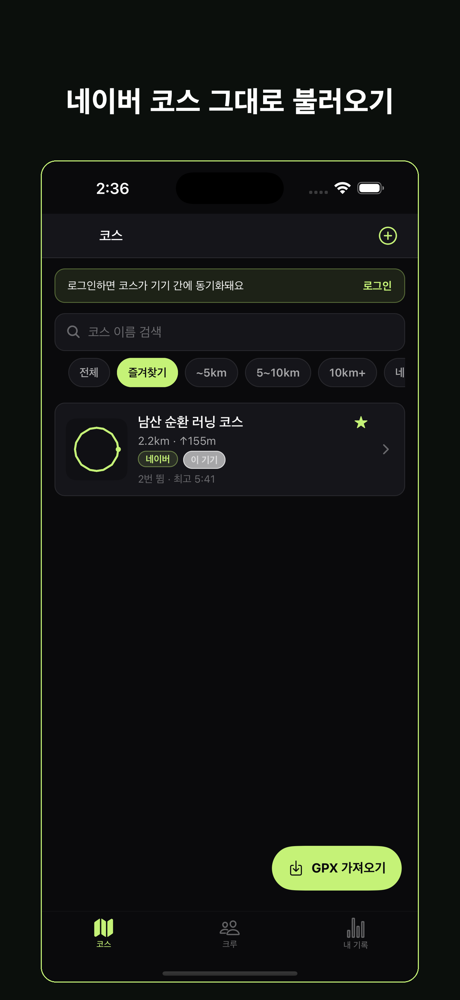
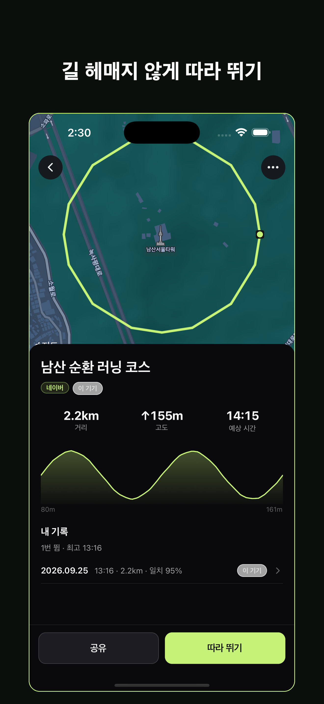
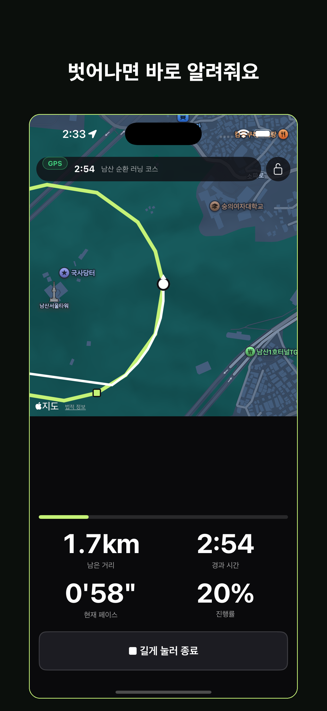
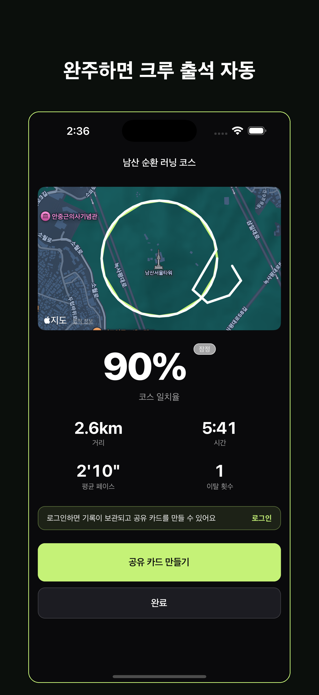
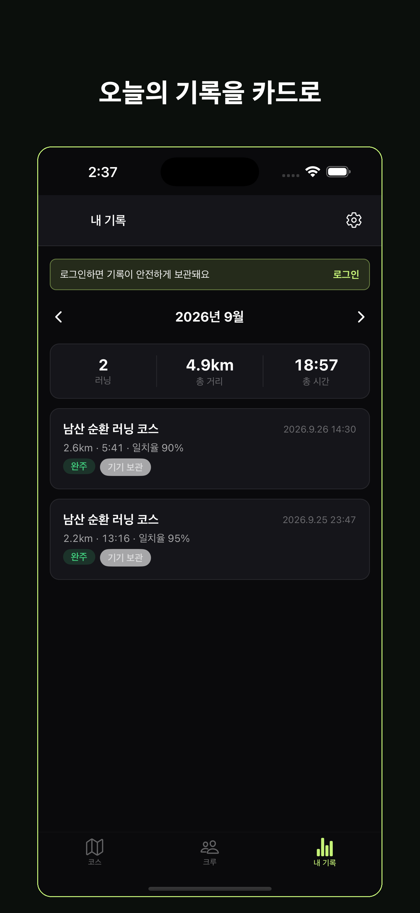

GPX 코스 불러오기
네이버 지도·카카오맵·스트라바·가민에서 내보낸 .gpx 파일을 파일 앱이나 공유 시트로 열면 바로 코스가 됩니다. 거리·고도·예상 시간을 자동으로 계산해 보관함에 저장합니다.
네이버 지도 PC 웹이나 카카오맵에서 만든 러닝 코스(GPX)를 불러와 휴대폰으로 따라 뛰고, 크루 이벤트 코스를 완주하는 순간 출석이 자동으로 찍힙니다.
코스를 “만드는” 기능은 지도 서비스에 맡깁니다. 따라런은 그 다음 — 뛰고, 남기고, 크루로 묶는 레이어입니다.
네이버 지도·카카오맵·스트라바·가민에서 내보낸 .gpx 파일을 파일 앱이나 공유 시트로 열면 바로 코스가 됩니다. 거리·고도·예상 시간을 자동으로 계산해 보관함에 저장합니다.
지도 위에 코스와 내 위치를 겹쳐 보여 주고, 남은 거리·경과 시간·현재 페이스·진행률을 크게 띄웁니다. 화면을 꺼도 안내가 이어집니다.
코스에서 30m 이상 벗어나면 진동과 음성으로 알려 주고, 복귀하면 다시 알려 줍니다. 1km마다 페이스와 남은 거리를 한국어 음성으로 안내합니다.
내 궤적이 코스를 얼마나 정확히 따라갔는지 일치율(%)로 계산합니다. 기록은 코스에 쌓여 “이 코스 3번 뜀, 최고 42:10”처럼 보입니다.
크루장이 코스와 시간 창으로 런 이벤트를 만들고 링크를 뿌리면, 멤버가 그 코스를 완주하는 순간 서버 검증을 거쳐 출석판에 자동으로 표시됩니다.
지도 위 궤적과 거리·시간·일치율을 담은 이미지를 만들어 인스타그램 스토리나 오픈채팅에 바로 공유할 수 있습니다.
실제 앱 화면입니다.





따라런은 러닝 앱이라 위치정보를 다룹니다. 무엇을 언제 수집하고 어디에 보관하는지 먼저 밝힙니다.
“따라 뛰기”를 시작한 뒤부터 종료할 때까지만 위치를 수집합니다. 러닝을 끝내면 수집을 멈춥니다.
궤적은 Supabase(AWS 서울 리전, ap-northeast-2)에 HTTPS로 전송·저장됩니다. 로그인 없이 쓰는 게스트 모드에서는 기기 밖으로 나가지 않습니다.
크루장·멤버에게 제공되는 것은 출석 여부, 완주 시각, 코스 일치율뿐입니다. 궤적과 거리는 본인만 봅니다.
제3자 제공 동의는 본인이 가입한 크루마다 따로 받습니다. 설정 > 위치정보에서 크루별로 철회할 수 있습니다.
출석 정보가 크루에 제공되면 푸시로 알려 드립니다. 원하면 30일 단위로 모아서 받도록 바꿀 수 있고, 앱 안 “위치정보 제공내역”에서도 확인할 수 있습니다.
앱 안에서 계정을 삭제하면 러닝 기록·출석·궤적 파일·GPX·공유 카드 이미지가 함께 지워집니다.
자세한 내용은 위치정보 이용약관, 개인위치정보 처리방침, 개인정보처리방침에 있습니다. 만 14세 미만은 계정을 만들 수 없습니다.